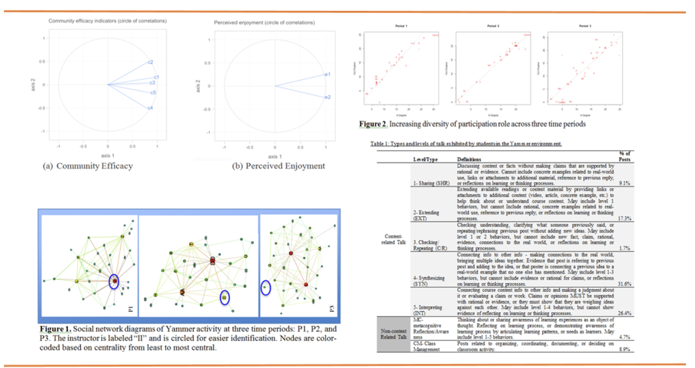

Our Works

Text Generation

Social Media Mining
Social Media Mining
Collaborating with Bodong Chen , assistant professor in Learning Technologies at the University of Minnesota and Xin Chen, PhD candidate in Engineering Education at Purdue University, we aim to uncover new insights about the learning analytics community by analyzing Twitter archives from the past four Learning Analytics and Knowledge (LAK) conferences.
Through descriptive analysis, interaction network analysis, hashtag analysis, and topic modeling of 10,736 tweets by 1,217 unique Twitter users, we found: extended coverage of the community over the years; increasing interactions among its members regard less of peripheral and in-persistent participation; increasingly dense, connected and balanced social networks; and more and more diverse research topics.
Yammer
Collaborating with Marcela Borge , assistant professor in Learning Sciences at Penn State University, we evaluated a theoretically informed approach to using Social Media (Yammer) as a means to support the development of a community of learners in an introductory human computer interaction course.
Our primary design goals were (1) to use the social media environment to help develop a learning community that lived outside of and yet fed into the classroom environment and (2) to connect classroom to real world experiences in ways that students could explore in personally meaningful ways. We hypothesized that we could create opportunities for collective sense-making and reflection through these connected experiences. Social network, communication analysis, and multivariate analysis were used to examine the form and function of social interactions in Yammer.
Relying on multivariate analysis, social network analysis and qualitative communication analysis, the results suggest that the theoretically informed approach to using Yammer succeeded in encouraging processes associated with a community of learners. The methods used in this paper may contribute to more effective ways of assessing the quality of discourse in socio-technical environments and the findings provide potential models for using social media as new contexts for developing conceptualization and discourse practices.
Semantic Visual Analytics System
Written Scientific Argumentation

FAccT AI in Education
FAccT
Introduction
This project is funded by IES, Schmidt Family Foundation, UF AI Catalyst, and UFII Seed Grant. Online learning has received great popularity in K-12 and higher education as instruction increasingly migrates from conventional methods. To support online learners at a large scale, educational researchers have adopted artificial intelligence (AI) and learning analytics (LA) techniques such as machine learning (ML) to predict their learning outcomes automatically. However, limited attention has been paid to the fairness of prediction with AI in educational settings that could enlarge inequality in education. In this project, we aim to explore methods and strategies to evaluate and mitigate AI bias as well as explain AI decision-making to support students in Algebra Nation, an online math learning platform with more than 500,000 active students every year. Specifically, we have explored different strategies to enhance AI fairness for education in different tasks such as academically at-risk prediction, peer recommender for help-seeking, and conversational AI for socio-emotional support
Yet Another Predictive Model? Fair Predictions of Students’ Learning Outcomes in an Online Math Learning Platform
This study aims to fill this gap by proposing a fair logistic regression algorithm. Specifically, we developed the fair logistic regression model and compared the fairness-aware model with fairness-unaware AI models (Logistic Regression, Support Vector Machine, and Random Forest). Fairness is evaluated with equalized odds that caters to statistical type I and II errors in predictions across demographic subgroups. The results showed that the fair logistic regression algorithm could achieve comparable predictive performance while producing notably higher fairness.
Toward building a fair peer recommender to support help-seeking in online learning
This study formulated a new method to provide fair and accurate insights toward building a peer recommender to support help-seeking in online learning. Specifically, we developed the fair network embedding (Fair-NE) model and compared it with existing popular models. We trained and evaluated the models with a large dataset consisting of 187,450 discussion post-reply pairs by 10,182 Algebra I online learners from 2015 to 2020. Finally, we examined models with representation fairness, predictive accuracy, and predictive fairness. The results showed that the Fair-NE can achieve superior fairness in genders and races while retaining competitive predictive accuracy.